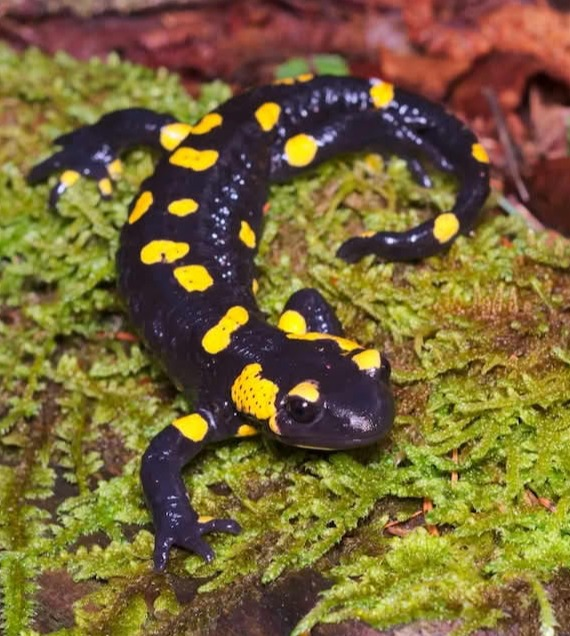
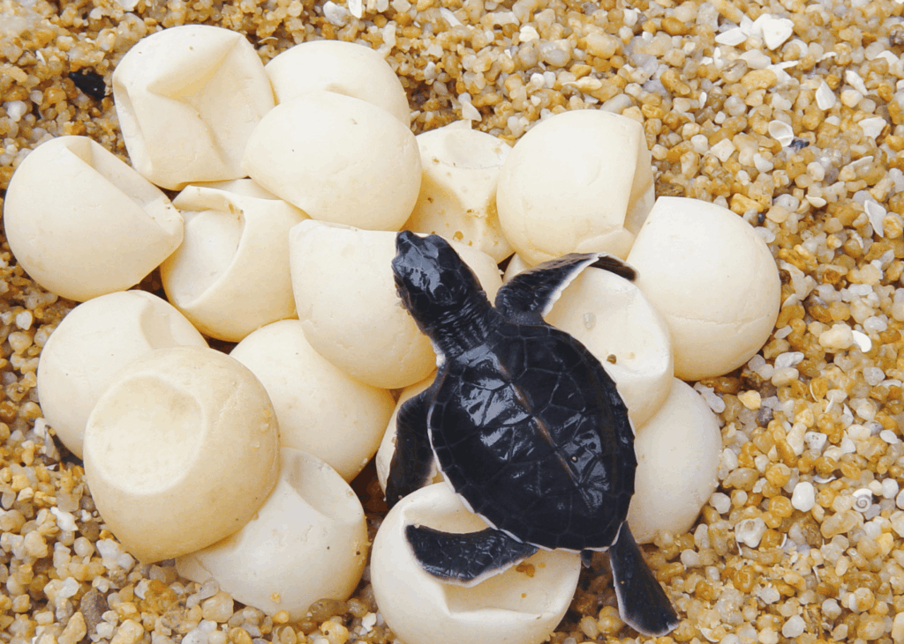

Drag & Drop Website Builder
En ildsalamander
Krybdyrene opstod for ca. 320 millioner år siden. De var de første ægte landdyr, der ikke behøvede vand til formering. Øgler, slanger, skildpadder, krokodiller er nutidige repræsentanter for klassen.
Det vandtætte æg er krybdyrenes store gennembrud. Mens paddeæg tørrer ud på land, har krybdyr æg sit eget mini-hav inde i sig – æggets læderhud holder på fugten og beskytter fosteret mod udtørring, mekanisk skade og bakterier. Dette ene træk frigjorde hvirveldyrene fra afhængigheden af åbent vand og åbnede hele den tørre landjord som levested.
Den vandtætte hud – dækket af keratinrige skæl eller plader – supplerede frigørelsen fra vand. Nu kunne krybdyrene kolonisere ørkenagtige og halvtørre habitater, som var fuldstændig utilgængelige for padder.

Skildpaddeæg med læder hud. På trods af det meget dumme navn, er en skildpadde altså et krybdyr!
Vandtæt skælhud: så i modsætning til padder behøver krybdyr ikke levet et fugtigt sted, de kan leve selv i ørkenen.
Æg med vandtæt læderhud: så krybdyrenes æg kan ikke tørre ud lige som padders.
Specialiserede kæber og tænder: Enorm variation, fra tænder der holder slap bytte til tænder der knuser skaller.
Drag & Drop Website Builder